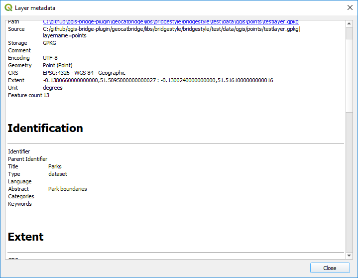

Metadata Editing
GeoCat Bridge provides a basic editor for metadata properties to create ISO19139-compliant metadata records. The purpose of this editor is to easily complete a minimal subset of required metadata elements:
Title
Abstract
ISO topic category
Keywords
Metadata contact
Data contact
Access constraints (used for data license)
Use constraints (also known as Fees)
Metadata language
When publishing metadata to GeoNetwork, Bridge will convert the QGIS metadata (QMD) into the ISO19139 format.
Preview metadata
To see a preview of the metadata of the selected layer, click the button.
This will open a new dialog and render the metadata as a simple HTML webpage:
Metadata validation
Bridge can use built-in QGIS validation tools and display the result of the metadata validation. Click the button to validate your metadata.
After validation a dialog with the results is displayed:

Load metadata
If your layer has metadata in ISO19139 or ESRI-ISO (ISO19115 or FGDC) format, and that metadata is available in an auxiliary file stored alongside the data file, QGIS will not automatically read it.
If you click Yes, a file dialog will open so you can select the metadata file to import.
Note
Some (non-supported) elements of the original metadata may get lost in the transformation.
Changes in the metadata editor will not be saved to the original imported metadata file.
Warning